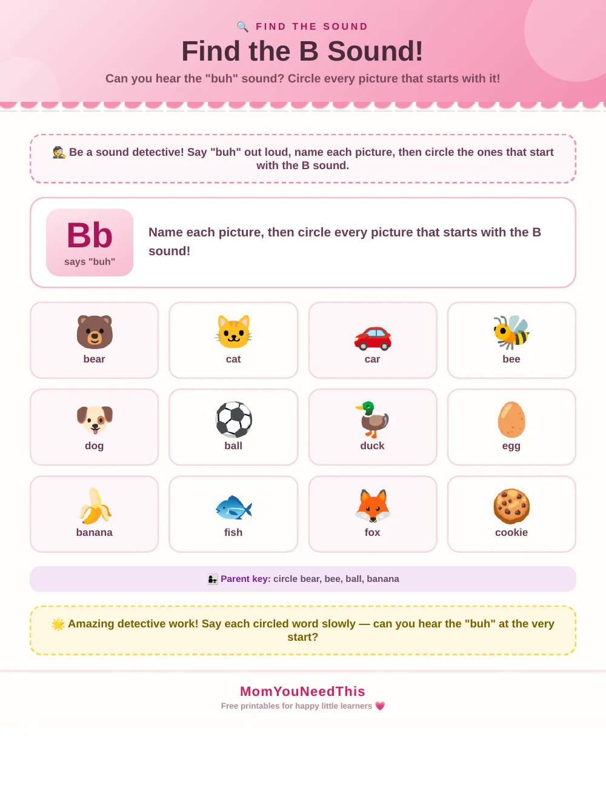

Letter Sound Worksheets Find Letter B Sound — Hunt for Pictures That Begin With the B Sound
Turn phonics into a treasure hunt! Your little detective will search the page for every picture that begins with the B sound.
Quick Answer
These letter sound worksheets help preschoolers connect letters with their beginning sounds through playful matching and sorting. Designed for ages 3-5, it builds phonemic awareness — a key early reading skill. Download and print at home with no signup needed.
At a Glance
- Ages: Preschoolers (ages 3–5)
- Activity: Finding the pictures whose names start with the /b/ sound
- Skills: Beginning sounds and phonemic awareness
- Format: Printable worksheet (PDF)
- Cost: Free, no signup
🐻 Bear
⚽ Ball
🍌 Banana

🔎 Search & Circle
Scan the page together and say each picture’s name. Every time you hear the B sound at the beginning, circle that picture!
⬇️ Download Free Printable 🖨️ Print🎁 Free printable for toddlers & preschoolers
🕵️ Be A Sound Detective
Put on your detective voices and hunt slowly. Words like bear, ball and banana all begin with the B sound.
🏆 Count Your Finds
Count how many B-sound pictures you found together. Counting the finds sneaks in a little math practice too.
More B Words to Hunt at Home
The sheet ends; the sound doesn't. Take the B hunt around the house with words your child already knows — say each one slowly and stretch the start: buh.
- Bird — buh-ird. Look out of the window.
- Book — buh-ook. The one you read at bedtime.
- Bed — buh-ed. Where the book gets read.
- Bus — buh-us. The big one that stops outside.
- Bubbles — buh-bbles. Two B sounds: one at the start, one hiding in the middle.
- Boots — buh-oots. By the door, ready for puddles.
When your child shouts "buh!" at something new, the worksheet has done its job — the sound now lives outside the page.
🎨 Keep Exploring Free Letter Activities
More alphabet learning activities are added regularly for toddlers and preschoolers.
🎁 View All Free Resources🖨️ How to Use This Printable
Get started in minutes — everything here is free and made for busy parents.
- Download the printable. Tap the download button to save the free Free Find Letter B Sound file to your device.
- Print it out. Use any home printer and regular paper — cardstock works great for pages little hands will use again and again. The print button opens the full-size page in a new tab if you prefer to print from there.
- Learn together. Sit with your child, follow the activity, and keep it playful. Short sessions work best.
- Explore more. Check the free printables linked below for your next activity.
🔊 Letter Sound Worksheets
These letter sound worksheets build the phonics skill that reading depends on: connecting letters to the sounds they make. Kids look at pictures, say the word, and find the ones that start with the target sound. Our letter sound worksheets are free printables for ages 3 to 5.
The best letter sound worksheets make kids say words out loud. 'Ball — buh. Bear — buh. Apple — ah.' Hearing the first sound is the skill, and saying the words is how it clicks. Keep it playful — this is a game, not a test.
Tip: use letter sound worksheets one sound at a time, and always start with a sound your child already knows for an easy win.
See find-the-B-sound sheet for more.
❓ Free Find Letter B Sound FAQs
Is this Free Find Letter B Sound printable free?
Yes — every printable on MomYouNeedThis is 100% free to download and print. No signup, no payment, just tap the download button.
How do I use this alphabet printable?
Print the page and work through it together: name the letter, make its sound, and complete the activity. Short, playful sessions work better than long lessons for little learners.
What literacy skills does this practice?
Letter recognition, beginning sounds, and print awareness — the core pre-reading skills that prepare children for phonics and reading.
What are letter sound worksheets?
Letter sound worksheets are phonics pages where kids match pictures to beginning sounds — find the pictures that start with B, for example. They build the letter-sound connection that early reading is built on.
What if my child circles a picture that doesn't start with B?
That near-miss is the learning, not a mistake to erase. Say both words slowly together — "ball — buh. Apple — ah." — let your child hear the difference, celebrate the careful listening, and move on. Circling a wrong picture means they were listening hard enough to test a guess, which is exactly the skill this page builds.
🔗 More Free Printables You’ll Love
Pair this printable with more free learning activities from the MomYouNeedThis library.
- 🔊 Beginning Sounds PagesFree beginning sound printables for toddlers and preschoolers.
- 🔤 Alphabet Coloring PagesFree A to Z alphabet coloring printables for toddlers and preschoolers.
- ✏️ Free Alphabet Tracing PagesFree alphabet tracing pages printable for toddlers and preschoolers.
- 🔊 Free Beginning Sounds PagesFree beginning sounds pages printable for toddlers and preschoolers.